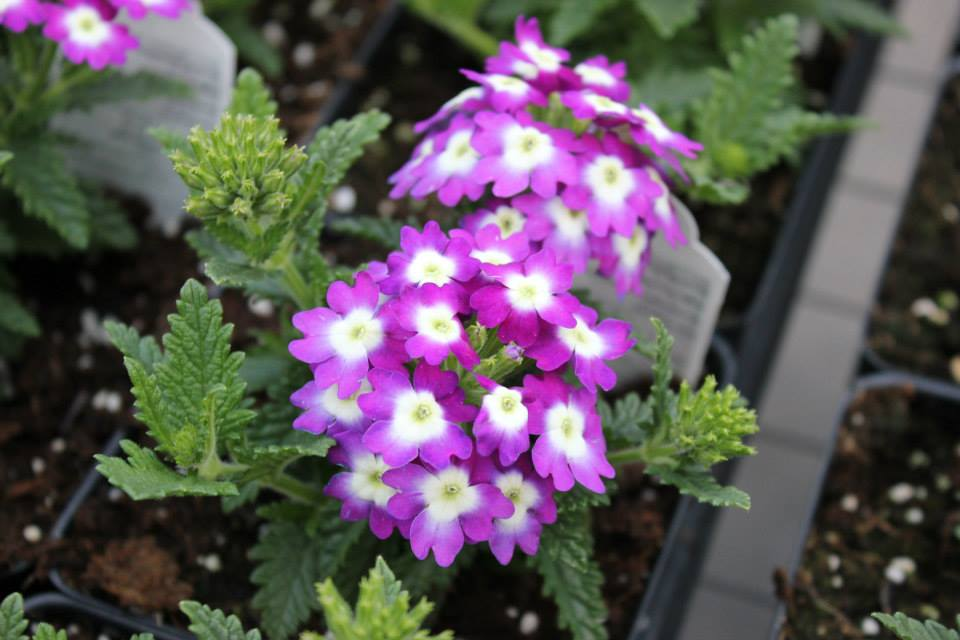

Rainbow Mill Gardens

Rainbow Mill Gardens

Rainbow Mill Gardens
PRODUCTS & SERVICES
Annuals, Perennials, Trees, Shrubs, Seeds, Landscape Needs, Fertilizers, Pest Control, Custom Work, and Gift
Certificates
ANNUALS
-A diverse variety of annuals
-Vegetables - An extensive variety of vegetable plants
-House, tropical and pond plants
-Our large tomato and cucumber plants are a perfect addition to your deck – What a great way to enjoy your summer
season with the delicious taste of some fresh tomatoes and cucumbers
PERENNIALS
-Visit our perennial house for a wide variety of perennials
HERBS
-A scrumptious variety of fresh herbs.
TREES, SHRUBS, & EDIBLES
-Ornamental and Fruit Trees
-Shrubs
-Small fruit vines and bushes
-Custom orders of larger trees caged and burlap
-Roses
SEEDS
-Flower, vegetable, seed potatoes, assorted bulbs, onion bulbs, garlic bulbs and grass see
LANDSCAPE NEEDS
-Geotech fabric, lawn edging, pond liner, decorative rock, topsoil, sand, mulch bulk and bagged, river rock, and
large decorative boulders
-Barkman Concrete products
-Hanging Baskets, Containers and Decorative Planters
-Custom made planters and baskets for all your special occasions
FERTILIZERS
-Organic, Miracle Grow Products, Seaweed Magic, and Slow Release
PEST CONTROL
-Pest control products for deer, rabbit and slugs
CUSTOM WORK
-Delivery of landscape products, skid steer leveling, ST440 tree spade and landscaping
GIFT CERTIFICATES
-Available in the denomination of your choice